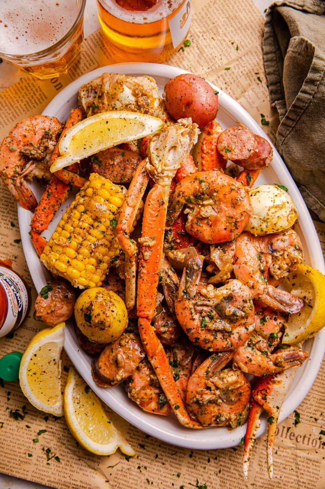

Photography

I love photography because it allows me to capture beautiful moments and express my creativity. There's something magical about framing a scene and capturing it forever.
Hiking

Hiking is one of my favorite ways to connect with nature. The fresh air, beautiful views, and the sense of adventure invigorate me every time I hit the trails.
Cooking
Cooking is both an art and a science that I thoroughly enjoy. Experimenting with flavors and ingredients is a gratifying way to share love with family and friends.